Caso 020 · Ferrater y Valero · 2004 · estación / intercambiador
Las vías van hundidas a 0,00 y el barrio las cruza por un plano a su propia cota, +9,00, que se corta sobre las vías para que entre el sol: la gente queda a la sombra y el sol cae sobre los raíles.
La idea sintetiza el lugar (el barrio de Delicias está nueve metros por encima de las vías y el Ebro, al noroeste, por debajo de ellas), el programa (tren de alta velocidad, cercanías, autobuses, aparcamiento, hotel, oficinas, comercio), la composición (tres bandas horizontales de 216 m sobre los andenes, separadas por cortes de 6 m, y una hendidura al sur) y la construcción (hormigón postensado para el plano, que es masa; acero y vidrio para la Sala y los pilares, que son ligeros; ladrillo para el barrio).
Alturas solares a 41,66° N: 24,9° (21 dic) y 71,8° (21 jun) al mediodía; en la sección perpendicular a las vías, 26,7° y 72,9°.
S01 dibuja el rayo del 21 de diciembre (26,7°) y el del 21 de junio (72,9°); maqueta 2 muestra el andén A a la altura de los ojos con el sol del mediodía de invierno.
Sistema proporcional: 18 m (retícula), 3,6 m (1/5, módulo de habitación y oficina), 2,4 m (1/3 de 7,2, plaza), 6 m (cortes, pasarelas, calles). Medidas clave: 7,50 m de intradós bajo el plano (6,50 de catenaria + 1,00), 9,00 m de plano, 1,50 m de canto.
Ladrillo (Zaragoza) para el barrio: fachadas de hotel y oficinas, estación de 1932 y cara del muro de contención. Hormigón visto para el plano y la losa. Acero y vidrio para la Sala y los pilares redondos. Piedra para el pavimento de la plaza. El cierzo (NO) lo frena la masa del barrio y el plano; las vías al norte quedan abiertas.
| Exigido | Propuesto | Cumple o desviación |
|---|---|---|
| Planos de todos los niveles | P01-P06 (+0,00, +4,50, +9,00, +13,50 y +17,10, +20,70, cubiertas) | Cumple |
| Secciones longitudinal y transversales | S01 (A-A', N-S), S02 (B-B', E-O por hotel, Sala y oficinas, y C-C', E-O por el andén B), S03 (D-D', N-S por pasarelas y aparcamiento) | Cumple |
| Alzados | S04 sur y norte, S05 este y oeste | Cumple |
| Detalles constructivos | D01 (fachada del hotel 1:20) | Cumple |
| Espacios exteriores | U01, U02, plaza de Delicias, parque, calles de enlace | Cumple |
| Vestíbulos de viajeros | Sala (+9,00, 1.695 m² libres), vestíbulo norte (1.269 m²), estación de 1932 (información y turismo) | Cumple |
| Vías y andenes de longitud de tren AVE, seguros | 5 vías, 3 islas de 216 m, banda de seguridad de 1,00 m, vallas de 1,10 m en los extremos | Cumple (longitud 216 m = 200 m de tren + 16 m) |
| Estación de autobuses conectada con el tren | 16 dársenas (+0,00), andén de 6 m directo al vestíbulo norte y a la isla C | Cumple |
| Aparcamiento de rotación y larga estancia | 797 plazas (392 + 405), 36 accesibles de 3,60 m, 5 puertas de vehículos, 2 rampas del 14,1 % | Cumple; 36 accesibles ≥ 26 (1 por 33) |
| Comercio y restauración | 3 locales de 10 × 7 m y restaurante de 18 × 18 m con cocina de 8 × 6 m | Cumple |
| Hotel | 72 habitaciones, 6 accesibles | Cumple |
| Oficinas, servicios de explotación, información y turismo | oficinas de 670 m² por planta (P2 y P3) y estación de 1932 (585 m² de oficinas en +13,50 más la planta de información en +9,00) | Cumple |
| Superficie 100.000 m² (75.000-125.000) | ≈ 63.000 m² construidos | Desviación del 16 % bajo el mínimo. Motivo: la demanda dibujada (andenes de tren AVE de 216 m y no de 400 m, 16 dársenas, 797 plazas, 72 habitaciones) llena la parcela de la sección; añadir programa sin demanda iría contra la esencialidad. No se da por buena como cifra de cliente: es una desviación declarada |
| Barandilla 0,90 m (1,10 m si desnivel > 6 m) | 1,10 m en todos los bordes de plano, hendidura, pasarelas y huecos | Cumple |
| Itinerario accesible | ascensores de 1,60 × 1,70 m cada 72 m en andenes, en hotel y oficinas en el mismo polígono de planta a planta, y 3 en el aparcamiento | Cumple |
| DB-SI: recorrido ≤ 50 m, escaleras de evacuación | andenes: 36 m al núcleo más próximo; hotel y oficinas: dos núcleos en los extremos de una barra de 54 m (recorrido ≤ 30 m); aparcamiento P-1: 6 escaleras de 2,4 m en el borde norte y 6 en el borde sur (PB a PA, dibujadas en P01 y P02), con recorrido máximo medido en planta de ≈ 45 m desde cualquier plaza | Cumple |
| DB-HE zona D3 | fachadas con 80 mm de aislante, cubierta con 100 mm, vuelo sur de 1,20 m | A verificar en proyecto (sin cálculo) |
| ADIF (gálibos) | catenaria de 6,50 m + 1,00 m de holgura bajo el intradós del plano | Hipótesis (el encargo no da el dato) |
La estación de 1932 (ladrillo, 60 × 12 m, muros de 0,50 m) se conserva y se rehabilita: en +9,00, información y turismo con vestíbulo; en +13,50, oficinas de explotación. Se añaden dos núcleos de escalera y un ascensor, un aseo por planta y una cubierta nueva a +17,10; los terrenos ferroviarios se desmantelan para alojar las vías hundidas.
| Elemento | Material | Acabado |
|---|---|---|
| Bandas del plano | hormigón postensado | hormigón visto |
| Pilares de andén | acero | pintura mate |
| Muro de contención sur | hormigón | ladrillo |
| Fachadas del hotel y oficinas (P2 en adelante) | ladrillo | ladrillo |
| Fachada del hotel en planta baja | vidrio | vidrio |
| Estación de 1932 | ladrillo (existente) | ladrillo |
| Sala | vidrio y acero | vidrio |
| Plaza de Delicias | hormigón | piedra |
| Tabiques de habitaciones y aseos | bloque | enlucido de yeso |
| Aparcamiento (suelos) | hormigón | losa |
Fachada del hotel: ladrillo caravista de 12 cm, aislante de lana mineral de 8 cm, fábrica de bloque de 14 cm, enlucido de yeso de 2 cm; cubierta: grava de 5 cm, impermeabilización, aislante XPS de 10 cm, formación de pendientes de 6 cm y forjado de 30 cm; solera de la plaza: pavimento de piedra de 4 cm sobre mortero de 4 cm y losa de 80 cm sobre hormigón de limpieza. Peto de 0,90 m con albardilla metálica; carpintería de madera con doble vidrio y vierteaguas metálico con goterón; zapata corrida de hormigón armado de 0,80 × 0,50 m bajo el muro de fachada.
BSk: calor seco de verano, invierno frío, oscilación diaria alta y cierzo. El plano y los pilares dan sombra en verano a las islas; los cortes de 6 m y la hendidura dejan entrar el sol de invierno (26,7°) donde se espera; la masa del barrio y del muro de contención frena el cierzo; la inercia térmica del hormigón y del ladrillo amortigua la oscilación; la cubierta de la Sala vuela 3,5 m al sur y el hotel y las oficinas, 1,20 m.
Qué comparte con la obra original porque lo impone el encargo: el solar lineal, los andenes largos, el acceso por ambos lados longitudinales, la estación de 1932 que se rehabilita, el programa (hotel, oficinas, autobuses, aparcamiento). En qué se aparta de ella y por qué desde la teoría: la idea del proyecto es una sección (andenes hundidos bajo un plano a la cota del barrio cortado en bandas), no una cubierta única protagonista; la luz se mide (luz sólida frente a difusa) en vez de resolverse con una piel; la masa estereotómica del barrio y las bandas se opone a la Sala tectónica de acero y vidrio; el plano horizontal está a una altura justificada (plano a la altura de los ojos, +10,60). No se toma ninguna imagen de obra de Campo Baeza.
El soleamiento calculado y las vistas maqueta 1 y maqueta 2 sustituyen a las maquetas reales al sol. maqueta interior no calcula las manchas de sol dentro: el haz se dibuja en S01. El desnivel de +9,00 es una hipótesis del proyecto (el encargo no lo da); si el real es otro, cambia solo la profundidad del corte. Las alturas de catenaria y los gálibos de ADIF son supuestos.
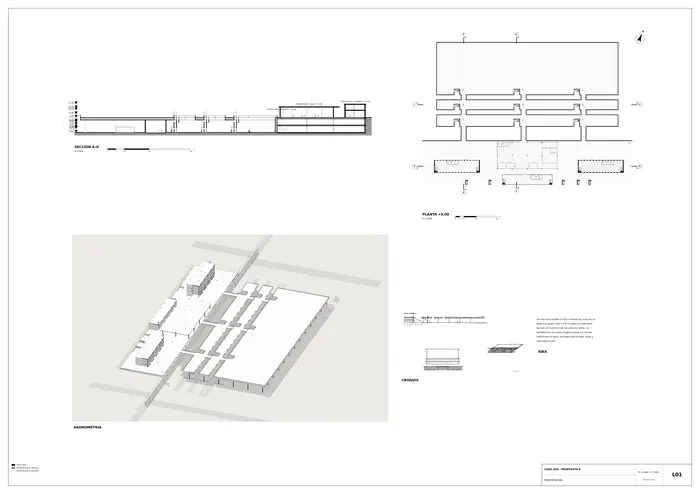
Presentación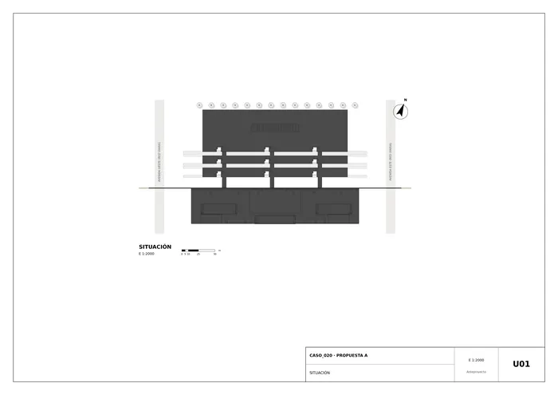
U01 · Situación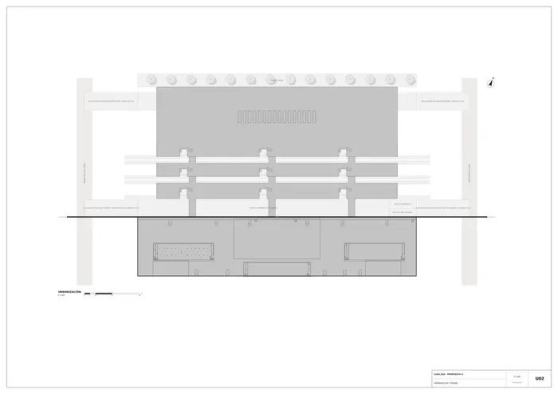
U02 · Urbanización y paisaje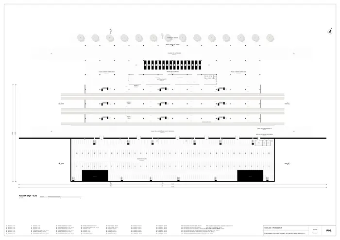
P01 · Planta baja +0,00: vías, andenes, autobuses y aparcamiento P-1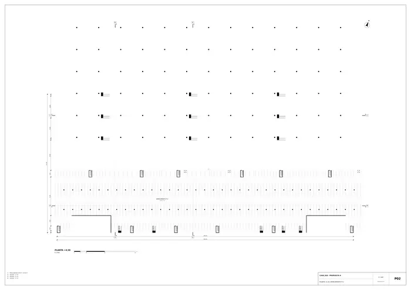
P02 · Planta +4,50: aparcamiento P-2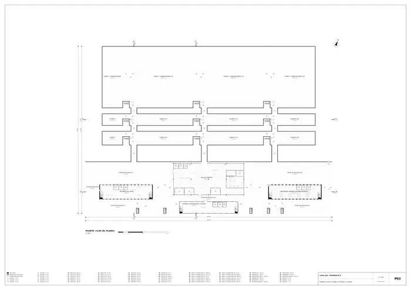
P03 · Planta +9,00: el plano, la plaza y la sala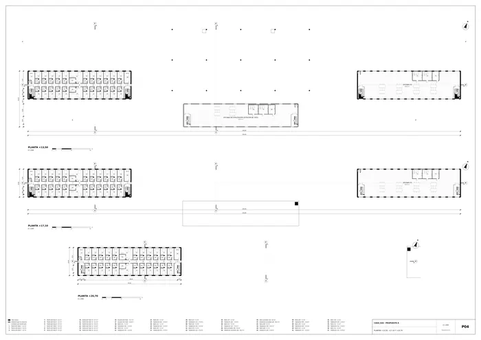
P04 · Plantas +13,50, +17,10 y +20,70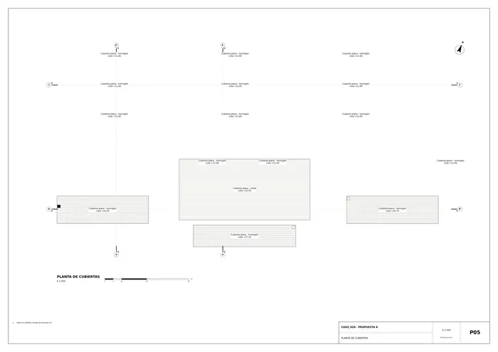
P05 · Planta de cubiertas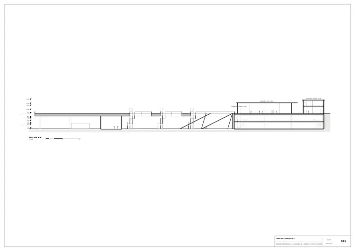
S01 · Sección generadora A-A': sol 21 dic 26,7 grados / 21 jun 72,9 grados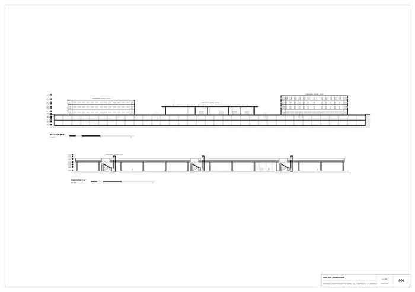
S02 · Secciones longitudinales B-B' (hotel, sala, oficinas) y C-C' (andén B)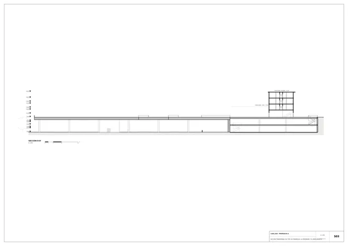
S03 · Sección transversal D-D' por las pasarelas, la hendidura y el aparcamiento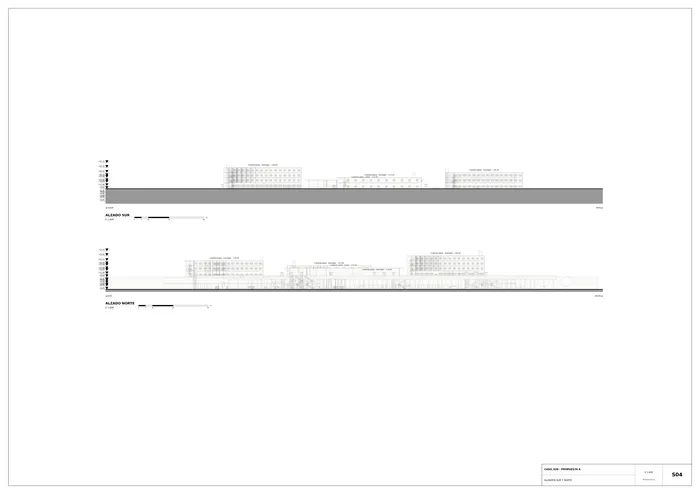
S04 · Alzados sur y norte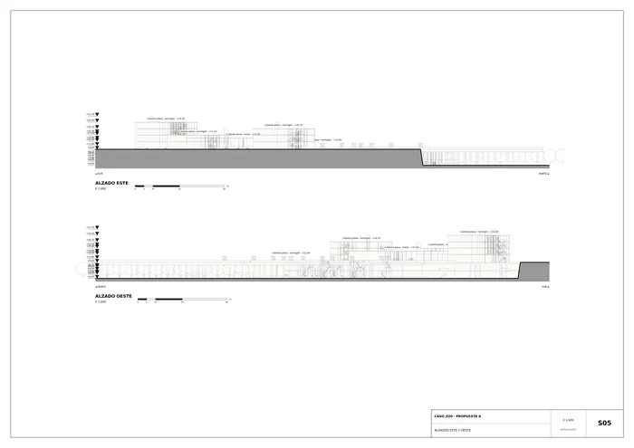
S05 · Alzados este y oeste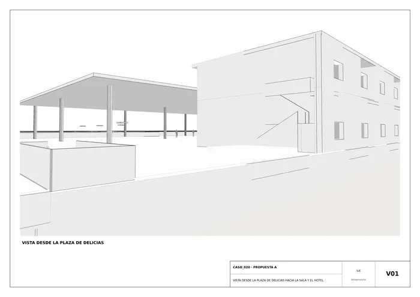
V01 · Vista desde la plaza de Delicias hacia la sala y el hotel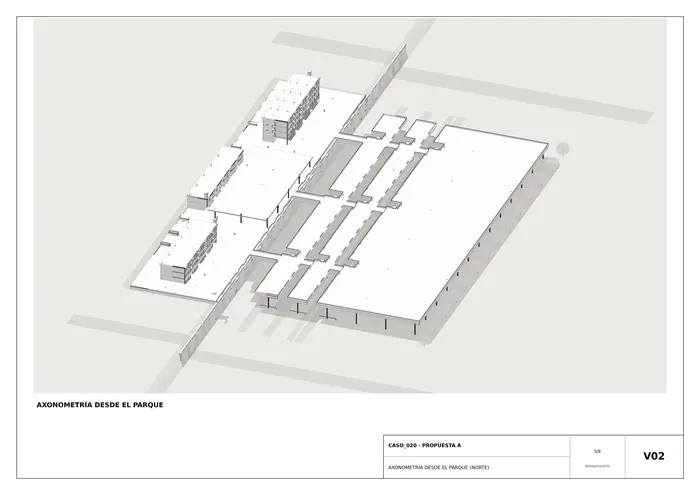
V02 · Axonometría desde el parque (norte)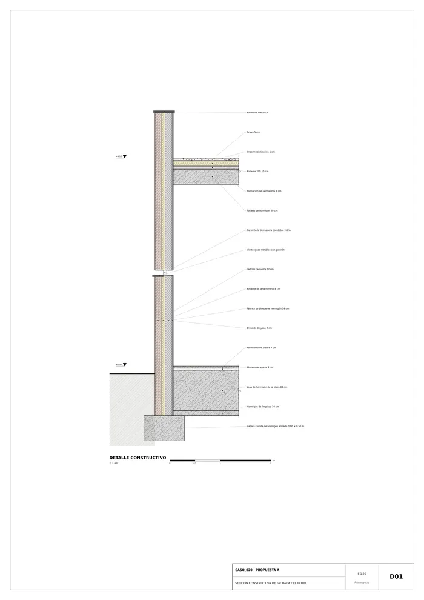
D01 · Sección constructiva de fachada del hotelMemoria de la propuesta tal como la entregó el sistema. Se han omitido las notas internas del proceso (revisiones, control de reconocimiento y referencias a archivos de trabajo).